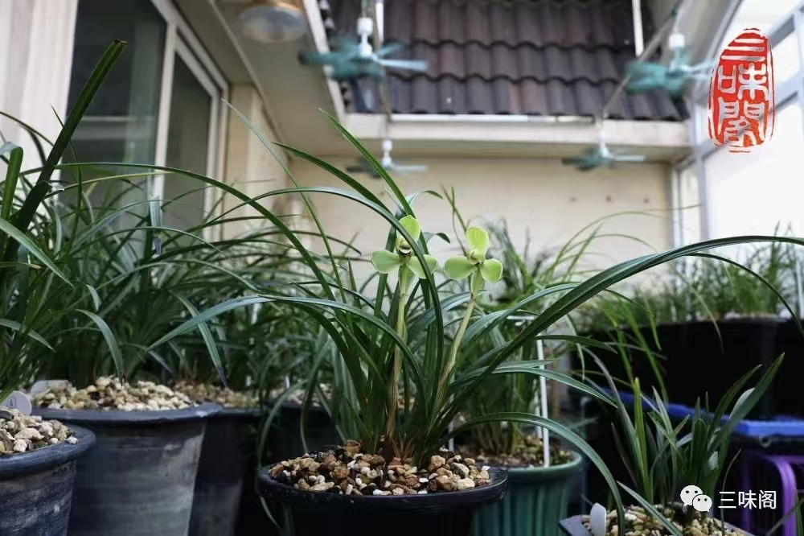
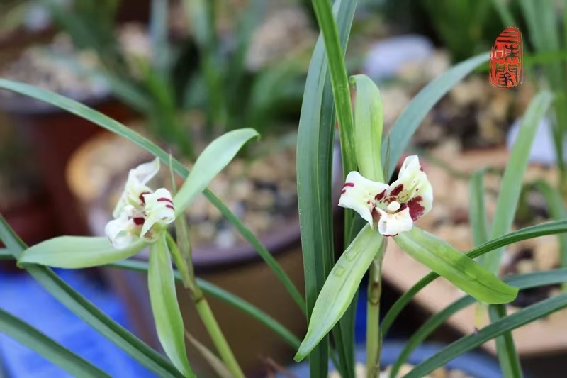
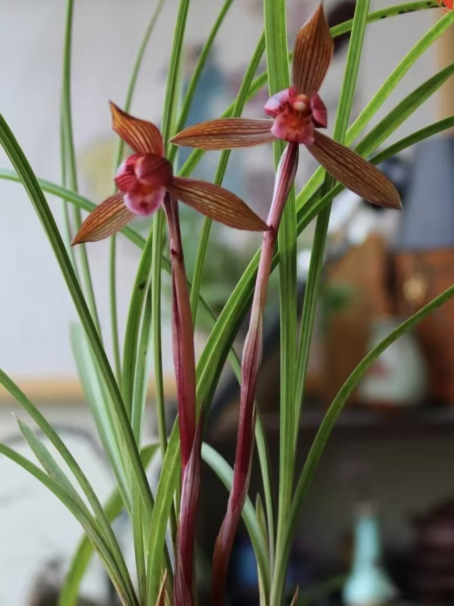

Chunlan (Cymbidium goeringii): The Elegant Spring Orchid of China
Published: July 28, 2026 | Category: Orchid Species

Among all Chinese orchids, none holds a more cherished place than Chunlan — the Spring Orchid. For over a thousand years, this elegant plant has been admired by scholars, poets, and gardeners for its subtle beauty, its exquisite fragrance, and the profound cultural meanings it carries.
Species Profile
| Common Name | Spring Orchid (Chunlan, 春兰) |
| Scientific Name | Cymbidium goeringii |
| Family | Orchidaceae |
| Native Range | China, Japan, Korea |
| Bloom Season | Late winter to early spring |

Appearance and Characteristics
Chunlan is a terrestrial orchid with slender, arching leaves that grow 20–40 centimeters in length. The leaves are a soft, medium green with a graceful, cascading habit that makes the plant attractive even when not in bloom. Unlike the broad, upright leaves of some tropical orchids, Chunlan's foliage has a gentle, flowing quality that Chinese gardeners have compared to calligraphy brushstrokes.
The flowers of Chunlan typically appear in late winter or very early spring, often emerging while the weather is still cold. Each flower stem usually carries a single bloom, occasionally two. The flowers are modest in size — 4–6 centimeters across — with pale green to yellowish-green sepals and petals, a white or pale lip marked with maroon spots, and a characteristic fragrance that has been celebrated in Chinese literature for centuries.
It is this fragrance, more than the flower's visual appearance, that has made Chunlan so beloved. Chinese orchid lovers describe it as youxiang (幽香) — a "deep fragrance" that is subtle, complex, and never overwhelming. It has been compared to the scent of honey, fresh grass, and distant flowers all blended together into a perfume that is both delicate and unforgettable.

Chunlan in Chinese Culture
As we explored in The Spirit of Chinese Orchids, Chunlan embodies the Confucian ideal of the noble person — one who possesses great virtue but does not seek recognition. The Spring Orchid blooms in the cold, quiet days of late winter, its fragrance carried on the wind to anyone who happens to pass by. It does not demand attention; it simply is what it is.
Chunlan has been a favorite of Chinese scholars and literati for centuries. In traditional Chinese painting, the orchid is one of the Four Gentlemen, and Chunlan is the species most often depicted. Its graceful leaves and modest flowers represent the qualities that educated Chinese aspired to: elegance without ostentation, strength without rigidity, and beauty without vanity.
The poet Zhang Jiuling (张九龄, 678–740 CE) captured this sentiment perfectly when he wrote of the orchid's independence from human approval. In Chinese culture, to be "like an orchid" is to possess genuine inner worth that exists independently of external recognition — a quality that remains deeply admired to this day.
The Art of Orchid Appreciation
Chinese orchid appreciation (赏兰, shǎng lán) is a refined practice that goes beyond simply looking at flowers. Connoisseurs judge Chunlan on several criteria:
Fragrance — The most important quality. A Chunlan without fragrance is considered a failure, no matter how beautiful the flowers. The ideal fragrance is subtle, natural, and spiritually uplifting.
Leaf form — The leaves should be graceful, evenly spaced, and free of blemishes. A well-grown Chunlan has leaves that curve naturally, creating a pleasing overall shape.
Flower form — The petals should be well-proportioned, the lip properly marked, and the overall flower shape balanced and harmonious.
Spirit — The most elusive quality. A Chunlan with "spirit" looks alive, healthy, and naturally elegant. This is the quality that distinguishes a good specimen from a truly outstanding one.
This tradition of appreciation elevates orchid growing from a hobby to an art form. It is not about producing the largest or most colorful flowers, but about cultivating a plant that embodies the aesthetic and moral ideals of Chinese culture.
Growing Chunlan at Home
Chunlan is a rewarding orchid for home growers who can provide the right conditions. It is a temperate orchid that requires a cool winter rest period to bloom well — making it unsuitable for constantly warm indoor environments but ideal for unheated rooms, porches, and temperate climate gardens.
Key growing requirements include:
- Light — Bright, indirect light. An east-facing windowsill or a spot under dappled shade outdoors.
- Temperature — Cool to moderate. Chunlan needs winter temperatures of 0–10°C (32–50°F) to trigger blooming. Summer growth is best at 15–25°C (59–77°F).
- Water — Keep the medium lightly moist during the growing season, drier during winter rest. Avoid overwatering.
- Medium — Chunlan is terrestrial, so it prefers a well-drained mix of bark, perlite, and peat or leaf mold.
For more detailed growing guidance, see How to Grow Orchids at Home and How to Water Orchids Correctly.
Chunlan Around the World
While Chunlan has been cultivated in China for centuries, it has gained a growing international following in recent decades. Botanical gardens in Europe, North America, and Japan have developed significant collections. International orchid exhibitions increasingly feature Chinese cymbidium categories, and a global community of Chinese orchid enthusiasts has formed online.
For collectors and growers outside China, Chunlan offers something different from the tropical orchids that dominate the international market. It is a plant that rewards patience, observation, and a willingness to work with nature's rhythms rather than against them. In a world of instant gratification, Chunlan is a reminder of the value of slowness and quiet attention.
Conclusion
Chunlan is more than a flower — it is a living connection to Chinese culture, aesthetics, and philosophy. Growing it means participating in a tradition that has enriched lives for over a thousand years. Whether you are drawn by its fragrance, its cultural significance, or simply its quiet beauty, Chunlan offers a doorway into a richer, more contemplative relationship with the natural world.
To explore more Chinese orchid species, visit our Chinese Orchid Species Guide or dive into Chinese Orchid Culture.